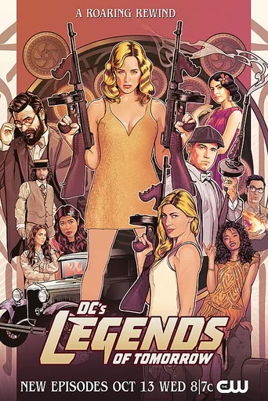

The genetics
Genetics appears in a few arcs of this long time-travel comedy. Ava Sharpe, a main character, learns that she is a clone produced in the 23rd century, a revelation the series treats as part of her personal story. In the sixth season, the villain Bishop, a scientist who has made clones of Ava, plans to create a perfect warrior by combining Sara Lance's DNA and memories with alien DNA, claiming that he has foreseen the end of humanity; he is defeated, and in the seventh season his cloning technology is used to build robot duplicates of the heroes. These elements are part of a broader mix of magic, aliens and time travel, and the series does not dwell on the science.
The story
This Arrowverse series follows a team of misfit heroes and former villains who travel through time aboard the ship Waverider. In the first season, the rogue Time Master Rip Hunter recruits them to stop the immortal tyrant Vandal Savage; Sara Lance, the White Canary, later becomes captain. Over seven seasons the Legends repair aberrations in the timeline and fight the Legion of Doom, the demons Mallus and Neron, magical fugitives. Ava Sharpe, director of the Time Bureau and later Sara's wife, is revealed to be a clone from the year 2213. In the sixth season, Sara is abducted by aliens working for a scientist, Bishop, who made clones of Ava and plans to create the perfect warrior by combining Sara's DNA and memories with those of aliens; the Legends defeat him. In the seventh season, stranded in 1925, they face robot clones built by the ship's artificial intelligence, Gideon, with Bishop's cloning technology. The series ends with the team arrested by the Time Police.